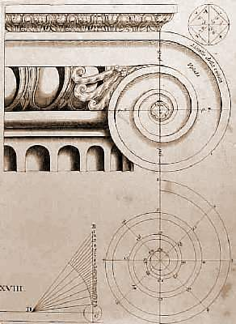

Volver a la pagina principal
Enlace2
Ejemplos
Podemos ver un concepto llamado tangencias simplemente en el mecanismo de una bici
En este otro ejemplo podemos ver el uso de la espiral de Arquímedes

Vemos aqui un claro ejemplo del concepto hipérbola, en la forma del tubo.